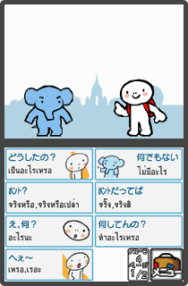
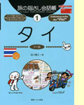
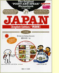
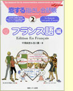

N.O.M：まず『旅の指さし会話帳』誕生のキッカケを教えてください。
情報センター出版局(以下情報セに略)：まず最初に出たのが、『タイ』と『インドネシア』と『香港』の３種類でして、初版が発行されたのは1998年になります。シリーズの最初がよくある英語などではなく、この３冊になったのは、まあ当時の編集者がアジアを好きだったんですね(笑)。アジア好きといってもツーリストというよりは、いわゆるバックパッカーという部類。観光名所を見て回る旅行というよりは、じっくり時間をかけて現地の文化や生活に触れてみるという旅のスタイルでしょうか。その学生時代からバックパッカーだった青年がですね、アジアを旅するうちに現地で言葉をおぼえていくのが楽しかったらしくて。
それも、「これはいくらですか？」という一般的な会話集によくあるフレーズではなくて、たとえば空港って客待ちのタクシーがたくさん並んでいますよね。そこで、「オレは乗らない、乗らない」と言って断るのは簡単なんですけど、「最近の景気はどうだい？」なんて言葉で話しかけてみたら、すごく仲良くなれた。その時に複数の言葉を並べるだけでも、けっこう会話は交わせるなと感じたらしいんです。そして帰国後に仕事として『ベトナムセンチメンタル』というベトナムに行くバックパッカー向けの旅行ガイドを出すんですが、この巻末に“コミュニケーションシート”という名称で『旅の指さし会話帳』の原型ともいうべきものが付録でついているんですよ(と、その本を見せてもらう)。
N.O.M：あっ、たしかに似てますね。色々な言葉が並んでます。
情報セ：この時点で基本的な形はある程度できているんです。知りたい現地語、それを訳した日本語、発音用のカタカナ読みが同じボックスで囲まれていて、それを指させば相手に伝わるという。その後、社内の営業から「あの本の巻末にある付録が書店で評判いいよ」という話がちょくちょく聞かれるようになる。それなら需要があるだろう、ということで単体の『コミュニケーションシート』を試作レベルで製作して、それを実際にアジアへ出かける人々に渡して現地で試してもらおうということになりました。そして帰国後に利用者からの実体験をもとに、掲載すべき言葉の種類やページの体裁などに関する意見をフィードバックする形でシリーズ第1号となる『タイ』が完成したわけです。
N.O.M：この特定の場所を指さす、という形はどのようにして？
情報セ：前述の編集者がアジアを旅したときに、気になる言葉をいまの本の体裁のようにノートへ書き留めていたようです。じつは、このシリーズを立ち上げた編集者は元々語学が好きだったわけじゃなく、むしろ、その手の勉強がすごい苦手だったらしいんですね(笑)。そういう人間が別に文法などを勉強しなくてもコミュニケーションが取るための解決策として、このスタイルにたどり着いた。もっとも、単純に言葉が並んでいるだけではなく、どんな言葉を収録するか、そして同じページにどんな言葉を並べておくか、というのがこのシリーズの本を作るうえでのこだわりになっています。このスタイルの便利さは書籍でも、ニンテンドーＤＳでも、実際に使っていただくとわかると思いますよ。
|
N.O.M：これなら外国で気軽に会話できそうですね。
情報セ：めざすコンセプトは“現地で生活できる、現地の人と仲良くなれる”です。もちろん、タクシーやバスに乗って目的地まで着ける、現地の店で買い物もできる、この辺は押さえておかなくちゃいけないんですけど、むしろそれよりも大切にしているのは、１人でも２人でもいいから現地の人と仲良くなれて、それなりに身の上話、突っ込んだ話ができるという作りを心がけています。
たとえば、おたがいの自己紹介のときに「どんな家族がいるの？」、「彼女はいるの？」という質問って、日本人同士でも仲良くなるキッカケになりますよね。それと、現地の人にウケるようなフレーズを掲載することも優先させています。会話集の例文にしか出てこないような、お堅い言葉ではなくて実際に現地で気軽に話されているものを選んでいます。
N.O.M：たとえて言うなら英語のスラングに近いもの？
情報セ：そうですね。現地の人にとっては「こんな言葉まで載ってるのか！」と感心して、おもしろがってもらいたい狙いもあります。タイ語で「ウザい！」って言えたら、おもしろいじゃないですか。先ほどの家族構成もそうですが、「せっかちだなあ」とか「やさしいね」とか、気さくに相手の性格を表すフレーズなんかを使うだけで、相手との距離がグッと縮まると思いませんか。それらの言葉のセレクションと、リアルタイムの会話に備えて即効性を重視した形でページごとに集められているのが、この本のポイントですね。
N.O.M：手作り感のあるページ構成もいい雰囲気ですね。
情報セ：まず親しみやすいという点で、このページの雰囲気は続けています。それとイラストは異なる国の人間同士がコミュニケーションするときに、共通のアイコンとして役に立ってくれますから。よくある観光ガイドや会話帳だと、お店やホテルのロビーなどのイラストは掲載していると思うのですが、ウチの場合は店先で立って話すよりも仲良くなってテーブルに座って話してほしい、さらに仲良くなって相手の家へ招かれればベスト、そんな感じをめざしています。そのために一般的な民家の内部イラストとか、すごくローカルな部類まで掲載しているんです。「郵便受けがカワイイね」とか「このタンス素敵じゃないの」など、相手の生活圏へ踏み込んだときに会話のネタが続かなかったら残念じゃないですか。
N.O.M：『旅の指さし会話帳』の発行部数はどのくらいですか？
情報セ：おかげさまで扱う国や地域は60ヶ国以上、シリーズ累計で200万部発行されていまして(2006年3月現在)、メインの購買層は20代・30代の女性になります。売れ筋としては今回ニンテンドーＤＳ版が登場する『タイ』が19万部、『韓国』が15万部、『中国』が13万5千部出ています。変りダネとしては英語圏に住む外国人向けの、日本で指さし会話ができる『JAPAN』が9万部というのもありますね。
これは推測なんですけど、指をさすしかない国のほうが売れるみたいです(笑)。英語って、授業で学んでいるし、ある程度はイメージしやすいじゃないですか。それに比べると、タイの街角なんて看板の文字が記号にしか見えない。また現地の国民性というのもあると思います。やっぱりアメリカやヨーロッパという欧米よりも、アジア圏の人のほうが指をさしたときに食いついてくれるみたいです。海外では英語を話せばなんとかなるというのもありますけど、そこで現地の国の言葉を使って話すと向こうも喜んでくれますから。
|
N.O.M：初期の本はほとんど改訂版なんですね。
情報セ：ええ。年月が経つと生活でおもに使われる単語も変化してくるし、より突っ込んだ会話が出来る、相手にウケる流行のフレーズは掲載したいというのがあります。それと、このシリーズは読者の方から感想がとても多く届くんです。改訂版ではそこで出てきた意見も積極的に取り入れています。やっぱり一番嬉しいのは「本当に現地で役に立った」、「現地の人と仲良くなれた」というハガキですね。あと、ハガキの総数としては「次はあの国を出してほしい！」というものが圧倒的に多いです……ここまでマイナーな国を網羅している海外の会話帳シリーズというのはないらしく、けっこう期待されているみたいです(笑)。ちなみに『イラク』は自衛隊からまとめて発注がきましたね。
N.O.M：そういえば言語ではなく国・地域別の本なんですね。
情報セ：そこもウチのシリーズの特徴だと思います。中国語圏だけでも、『香港』・『中国』・『台湾』と分かれていますし、英語圏も『アメリカ』・『イギリス』・『カナダ』と別の本になっていますから。現地で生活できる、現地の人と仲良くなれるというコンセプトを突き詰めていくと、国ごとに異なる文化や習慣、風俗を合わせて紹介していくことになる。
じつは本ごとに著者がいるというのも会話帳というジャンルでは珍しいんです。といっても、言語学の権威という方ではなく、現地で何年か生活して言葉をおぼえていった人に任せている場合が多いですね。そういう方だと「初心者の頃に、こういう言葉を知っていたらよかったな」とか実体験から書けますから。やっぱり、自分が苦労しておぼえていった体験が言葉をセレクトするときに生きているようです。もちろん、カタカナ表示の発音などはネイティブの人にチェックしてもらっていますが。

N.O.M：ニンテンドーＤＳへの移植はどう考えていますか？
情報セ：正直、とても楽しみにしています。２つのディスプレイで片方の画面を相手側に反転させて使うというのは会話する上ですごく便利だと思うし、やはりタッチペンでの操作というのがウチの本の“指さし会話”というコンセプトとがっちり合っていますよね。画面上にある言葉を“指さす”(タッチする)と、単語をネイティブで発音して相手に伝えてくれるのも任天堂さんならでは。書籍を作った身としては言葉の検索方法なんかにも注目したいかな。それに“Touch! Generations”というコンセプトは興味深いなと感じているので、そのシリーズに『旅の指さし会話帳』が加わるのは光栄です。これをキッカケに“指さし会話”というコミュニケーション方法がますます広まってくれたらと思います。
N.O.M：最後に、これから『旅の指さし会話帳』をニンテンドーＤＳで楽しむユーザーにひとことお願いします。
情報セ：なんといっても携帯ゲーム機で使えるということで、書籍と同様に旅先での優れたコミュニケーションツールとなってくれると思います。語学の勉強が苦手な人でも大丈夫、ぶっつけ本番で会話が楽しめるので、ぜひ手にとってチャレンジしてみてください。
N.O.M：なんだか旅に出たくなりますね！ 今日はありがとうございました！
|
|
|
|
|
|  |
旅の指さし会話帳1 タイ
1,365円（税込）
記念すべきシリーズ第１弾(現在は第二版)。タイ語での会話はもちろん、タイ文化の解説も載っています。表紙の左側にいる、味のあるキャラクター(バックパッカー風なのがイイ感じ)はニンテンドーＤＳ版でも登場しますよ。
|
|
|  |
旅の指さし会話帳21 JAPAN
1,575円（税込）
英語圏に住む外国人用の日本語ガイド。指さし会話なら、こちらもビビる必要ないかも。紀伊国屋書店新宿南店6階の洋書コーナーで大人気らしい。英語圏の他に、韓国語圏や北京語圏、スペイン語圏バージョンもあり。
|
|
|  |
恋する旅の指さし会話帳2 フランス語
1,575円（税込）
姉妹シリーズとして“恋する”と“食べる”も登場。それぞれのシチュエーションに特化した会話帳です。“恋する”の中身は口説き文句のオンパレードで、読んでいると赤面必至。海外でのアバンチュールを夢見る人に！
|
|
|